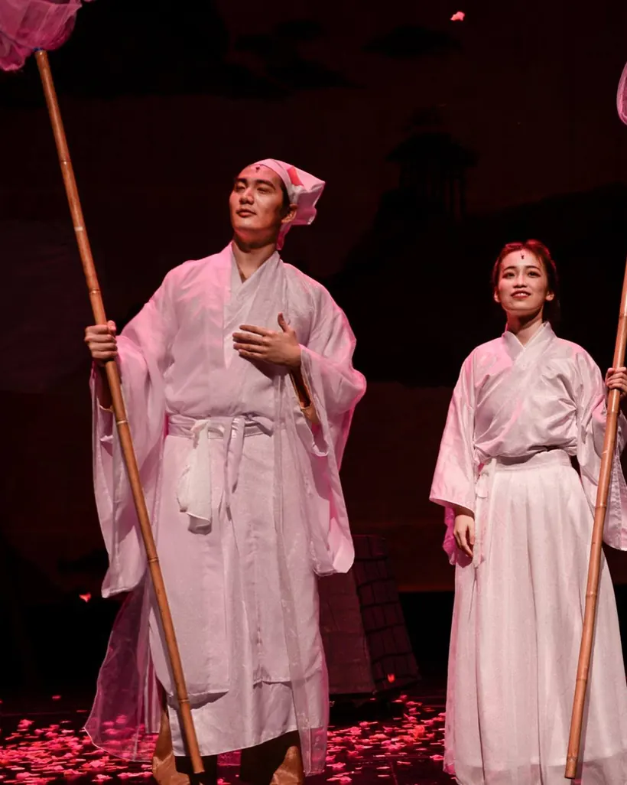
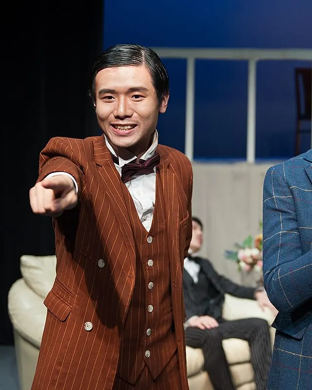
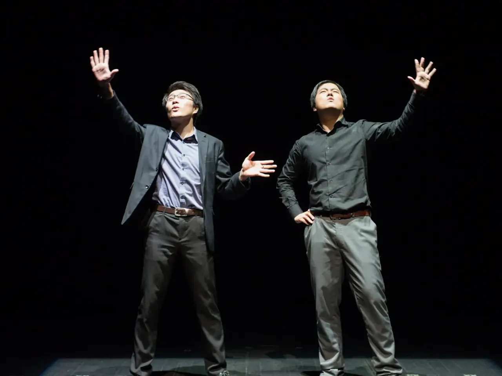
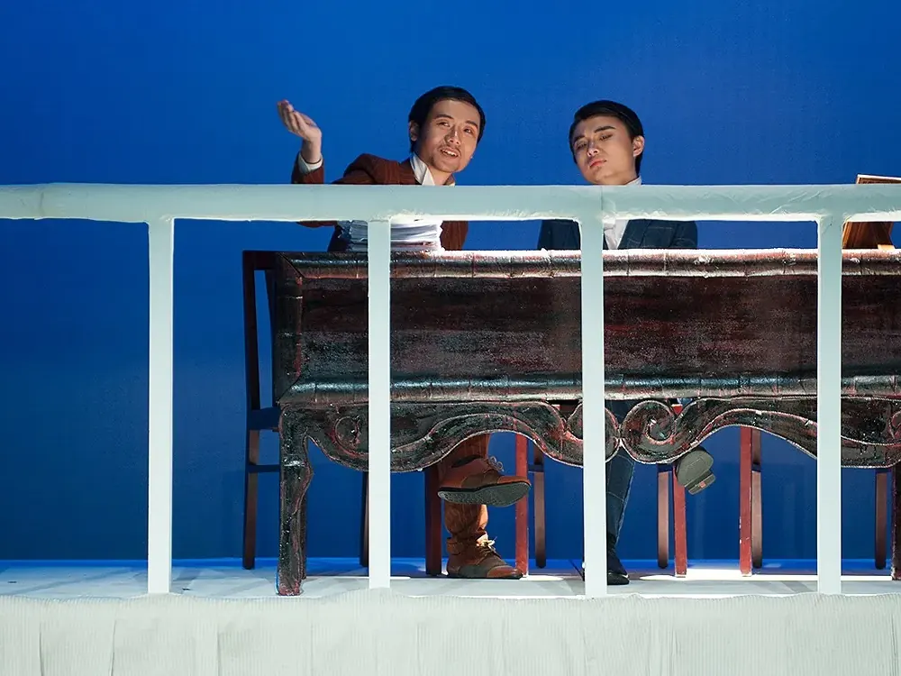
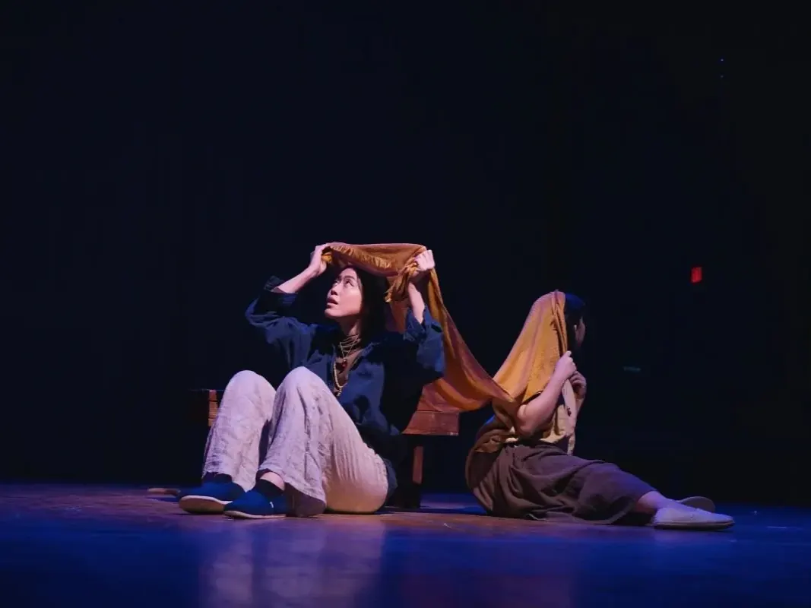
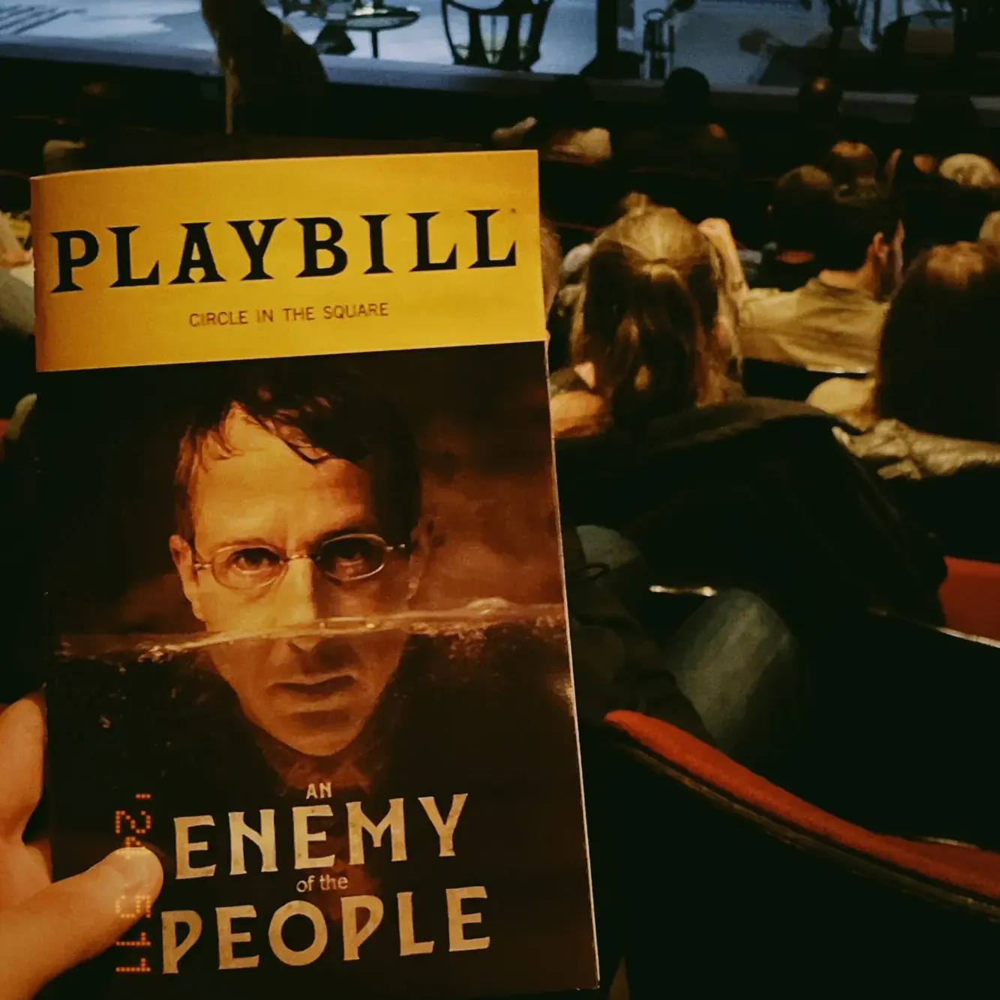

Theatre in Singapore and Seattle
I act, direct and design for the stage: 13 productions since 2014, six in Singapore and seven in Seattle.
Recent productions
Six of the 13, newest first. Each page has the cast, the crew and the photographs.



Secret Love in Peach Blossom Land
2018 · KEVII Chinese Drama, Singapore
Artistic advisor

The Pillars of Society
2015 · KEVII Chinese Drama, Singapore
Director, script adaptation and stage design

Ménage à 13
2014 · KEVII Chinese Drama, Singapore
Assistant director and ensemble cast lead
Roles across 13 productions
Some shows count twice. In Romulus the Great I played the lead and assisted the director.
-
On stage in 8 productions
The lead in Romulus the Great, then In Between, Instant Noodles II and America "250" in Seattle.
-
Directing 4 productions
I adapted and directed The Pillars of Society, and assisted on three more.

-
Designing sets and light for 2
The set of The Pillars of Society and the lighting of Young People Social Death Archive.

-
Producing and advising 3
Co-producer of Yun's Lab, a theatre course with a showcase, and advisor to two KEVII shows.

Reviews and other writing
Mostly in Chinese: three plays seen in New York in May 2024, three films and three pieces of my own.
Browse the archive- Dine AloneOn eating aloneEssay, 2026
- 2025年冬Notes from December 2025Notes, 2025
- 母亲的碎片散落在母亲节Mary Jane, with Rachel McAdamsPlay, 2024
- 后疫情时代的易卜生An Enemy of the People, with Jeremy StrongPlay, 2024
- 信仰的幻灭与虚空的生活Uncle Vanya, with Steve CarellPlay, 2024
- 男主可以是女主自我意识的外化投射吗？Last Year at MarienbadFilm, 2023
- Bad Weather In YakimaA short storyStory, 2023
- 过誉、小年、和陪跑的马丁麦克唐纳The 95th Academy AwardsFilm, 2023
- 自我毁灭的好莱坞，生生不息的光影BabylonFilm, 2023

About the name Richthofen
After the Red Baron, a nickname since secondary school. No relation, and no plane.
I have lived in Chongqing, Singapore, Oslo and Pittsburgh, and now the Seattle area. Theatre started in 2012 at NUS King Edward VII Hall. At Carnegie Mellon I took an acting class at the School of Drama.
By day I work on compute infrastructure at Microsoft AI. Before that: Snowflake, AWS Lambda and Sea.
Read the about page